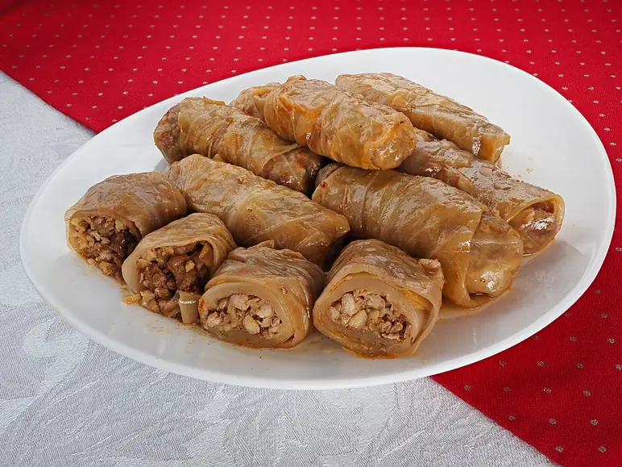

Фото: Petar Milošević, CC BY-SA 4.0
.jpg){kind=link}
Ленивые голубцы
Вкус голубцов без возни с листьями: капуста, фарш и рис в сметанно-томатном соусе
70 мин5 порц.552 ккал на порциюБ 24 · Ж 37 · У 30Русская кухня
Продукты на 5 порц.
- Капуста белокочанная500 г
- Фарш свино-говяжий500 г
- Рис0,5 стак.
- Лук репчатый1 шт
- Морковь1 шт
- Яйцо куриное1 шт
- Томатная паста1,5 ст. л.
- Сметана 20%6 ст. л.
- Вода2 стак.
- Мука пшеничная2 ст. л.
- Растительное масло3 ст. л.
- Соль2 ч. л.
- Перец чёрный молотый2 щеп.
Как готовить
- Рис отварите 10 минут до полуготовности и остудите.
- Капусту мелко нашинкуйте, ошпарьте кипятком на 3 минуты и отожмите.
- Смешайте фарш, капусту, рис, яйцо, половину соли и перец. Слепите 10-12 продолговатых котлет и обваляйте в муке.
- Обжарьте на половине масла на среднем огне по 3 минуты с каждой стороны. Сложите в сотейник.
- На оставшемся масле обжарьте нарезанный лук и тёртую морковь 5 минут. Добавьте томатную пасту, сметану, воду и соль, перемешайте и доведите до кипения.
- Залейте голубцы соусом, накройте крышкой и тушите на слабом огне 30 минут.
- Готовые голубцы упругие внутри, соус густой и розоватый.
Совет. Капусту обязательно ошпарьте и отожмите, иначе она пустит много сока и котлеты будут разваливаться.